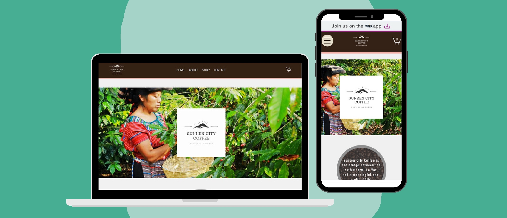

A Website Design: Sunken City Coffee
December 2020
Project overview
For my final project in my consumer marketing class, each group was tasked with forming a pop-up company to brand, market, and sell coffee that had been imported from Guatemala. We partnered with the coffee processing co-op in San Juan La Laguna, La Voz, and donated all profits to the Organization for the Development of the Indigenous Maya (ODIM). ODIM is a non-profit organization whose mission is to enable access to healthcare and preventative health education for the population, with equality, honesty, and confidentiality, that is focused on programs that promote the development and empowerment of the communities of San Pablo La Laguna and San Juan La Laguna. We created the branding for the coffee, a social media platform to advertise it, and a website to sell it.
Goal
The project had a two-week duration, and the goal was to sell out within one week of publishing the website and raising $5000 together as a class.
Constraints
Due to the short duration of our three and a half week consumer marketing class, we had a very limited amount of time to build our website and execute a marketing strategy. As a result, we had to complete the entire project, including branding, advertising, and selling, within just two weeks. This compressed timeline had an impact on the level of depth and quality we were able to achieve for our website and marketing efforts, and it made it more difficult to effectively convey our unique story and message to potential customers at first glance, but we were able to have a positive impact on the community and achieved the project goals.
Team Roles
In our project, each team member had specific responsibilities based on their role. The process leader created a project schedule and kept the team and professor informed about the project's progress. The creative was responsible for generating content for the website, brand story, and package labels. The order logistics manager tracked orders and inventory levels. The website manager developed and maintained the website, including e-commerce functionality. The social media manager handled daily sales, built the consumer base, and managed the social media presence. The finance manager recorded financial transactions and worked with the college's finance department to ensure transparency and timely bookkeeping. For this project, I fulfilled both the roles of website manager and creative.
Research
Before diving into website design, I recognized the importance of conducting research on the organizations we were representing, La Voz and ODIM, as well as identifying our target audience. This was essential for crafting a compelling story that would encourage customers to purchase a 12oz bag of coffee for $20.
By understanding the values and mission of La Voz and ODIM, I could effectively convey their stories and impact to potential customers. Meanwhile, identifying our target audience allowed me to tailor our messaging and marketing strategies accordingly.
Audience
Taking into account our product, objectives, and the timing of our launch, I identified a specific audience to target. Given that we were selling coffee during the holiday season in December, I focused on coffee lovers and their families who may consider purchasing our coffee as a gift. I also aimed to leverage the holiday spirit of giving to encourage both purchases and donations for our cause. Our target audience consisted of individuals who cared about social causes.
Competition
After identifying our competition, which included the other student teams in the class and established coffee brands like Starbucks and Peet's, I realized that in order to stand out, we needed to take a more personalized approach. Instead of just selling coffee, we aimed to sell our story and the unique tales of Guatemala, emphasizing the social impact of the purchase. I wanted customers to connect with the cause and feel that they were contributing to something meaningful, beyond just buying a bag of coffee.
Interviews
Due to the limited timeframe, we were unable to conduct extensive interviews, but we did manage to meet with the leaders of ODIM to gain a better understanding of the non-profit organization and the communities of San Pablo La Laguna and San Juan La Laguna. This was crucial for crafting a compelling narrative.
Design process
Despite facing time constraints, I initially planned to use a website template provided by Wix. However, upon reviewing the templates available, I found that none of them were suitable. They all had a modern and minimalistic design that did not align with the message you wanted to convey to customers. Many of them felt too generic and were geared towards online clothing shops, with a strict and impersonal aesthetic. So, I decided to build the website from scratch.
- First, I created a basic wireframe on the website and sent it out to the other members of my group to check if the information architecture and layout of the pages were intuitive to them. Then, I began gathering photos from both La Voz and ODIM that I could use on the website. I also came up with an earthy and warm color scheme to use. I wanted the colors to evoke feelings of “coffee”, “community”, and “growth”.
- Next, I began writing content for the website. I focused on the tradtional Mayan methods they used and where they grow and harvest their coffee. We included an interactive map to show where the communities were located and information about our project and ODIM. We also came across a story about a Mayan ceremonial site where they held important rituals and we named our brand after them, the Sunken City.
- In the end, I still wasn't convinced by our own storytelling and I came up with the idea to introduce the team and share our morning coffee rituals. This "About the Team" page was the extra flourish we needed to bring our website to life and give our website more personality.
- Finally, I had users test the website on different devices such as a laptop and phone to ensure its intuitiveness and ease of use, making minor edits based on their feedback.
Final design
Unfortunately, the webiste is no longer being hosted. These are screenshots from my website.
Impact
Our team achieved remarkable success with our coffee campaign, selling out all the coffee in just five days. We outperformed all the other teams in the class and, as a result, raised over $2000 in profit. As a class together, we were able to reach our overall goal of $5000 which was donated to ODIM.Lessons Learned
Despite not being a product design project, I gained valuable skills that are transferable to such projects. If I were to undertake this project again with more time, I would prioritize spending more time on user research, the design process, and usability testing. At the time, my knowledge of design principles, wireframing, and prototyping was limited, so I relied more on aesthetics, personal preference, and storytelling. Moving forward, I aim to conduct more user research to understand pain points and create a more visually appealing and intuitive interface using the design principles I have learned.
This project highlighted the importance of telling a compelling story and using it to differentiate our product or service. By telling the story of the communities in Guatemala and their coffee, the team was able to create a more meaningful connection with our customers and stand out from the competition.
It was also a team effort and demonstrated the value of collaborating and working together towards a common goal. By leveraging each team member's strengths, we were able to create a successful campaign and website. The team encountered many challenges during the project, such as time limitations and the unavailability of certain resources, which taught me the importance of being flexible and adaptable in finding alternative solutions and approaches to overcome these obstacles.
Lastly, this project highlighted the importance of continuous learning and improving one's skills. Reflecting on the project and identifying areas for improvement can help me grow and develop as a product designer.